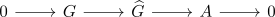
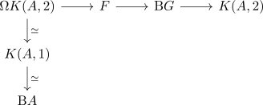
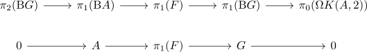

element in second group cohomology induces central extension
Proposition
Let $G,A$ be groups, where $A$ is abelian. Suppose $x \in H^2(\mathrm{B}G, A)$ is an element. Then this induces a central extension

Proof
consider $x$ as map
\begin{align*}
\mathrm{B}G \rightarrow K(A,2)
\end{align*}
which then induces a some fiber sequence

by taking the homotopy fiber.
In particular we may consider the long exact sequence which then as desired gives an extension
